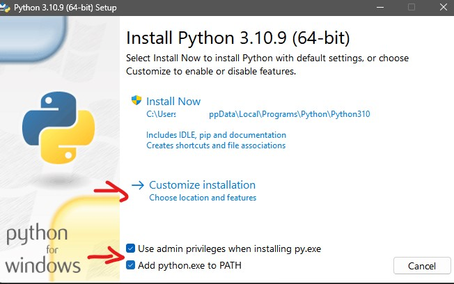

Para empezar, es recomendable cumplir con unos requisitos mínimos.
Como estaremos trabajando con código, es recomendable tener cierta noción en programación. En concreto, usaremos Python (en VapourSynth) y la línea de comandos. En esta guía solo veremos Windows, pero también es posible trabajar en Linux y Mac.
La codificación de vídeo es algo que exige mucho en cuanto a proceso, por lo que se necesitará un equipo bastante potente con unas características mínimas:
Recomendado:
A continuación, veremos los programas que utilizaremos:
Es una herramienta de procesamiento de vídeo relativamente sencilla de usar. Las órdenes se escribirán en Python, por lo que debemos tenerlo instalado.
Primero, antes de instalar VS, se ha de tener instalado Python. Con los instaladores ya descargados, ejecutamos el de Python como administrador y seguimos los pasos siguientes:
Una vez instalado Python, procedemos con la instalación de VapourSynth:
Luego simplemente hacemos click en “Siguiente” hasta que salga “Instalar”, y haremos click en “Instalar”. Listo.
Necesitaremos un editor. Existen varios, como VapourSynth Editor, pero nosotros usaremos Visual Studio Code (aunque sirven otros editores, como Sublime text), junto con vs-preview.
Primero, instalamos VS Code.
Luego, vs-preview, simplemente ejecutando py -m pip install vspreview en cmd.
A continuación, procederemos con la configuración del entorno.
Hay varios métodos, pero personalmente recomiendo crear un área de trabajo en la que tener todos los scripts. Para ello, creamos una carpeta en el lugar que prefiramos. Ahora, descargamos este archivo o copiamos el siguiente código en un bloc de notas y lo guardamos como “Encode.code-workspace” en un lugar del que no lo borraremos ni moveremos:
{
"folders": [
{
"path": "G:\\Encode\\.vscode"
}
],
"launch": {
"version": "0.2.0",
"configurations": [
{
"name": "VS Preview Current File",
"type": "python",
"request": "launch",
"console": "integratedTerminal",
"module": "vspreview",
"args": ["${file}"],
"showReturnValue": true,
"subProcess": true
}
]
}
}Al principio, donde pone “path”, cambiaremos la ruta que hay por la nuestra, es decir, la ruta a la carpeta que creamos.
Ahora iremos a configuración (Ctrl + ,), buscaremos “Associations” y dentro de “Files: Associations”, haremos click en “Agregar elemento”. Rellenamos los campos (Elemento: *.vpy; Valor: python).
Ahora, cuando estemos en un archivo de VapourSynth, simplemente con presionar F5 cargará vs-preview y podremos ver el resultado del script. Además, los errores que tengamos, al igual que advertencias, aparecerán abajo, en la terminal.
También necesitaremos plugins y scripts, las cuales instalaremos mediante VSRepo, “python -m pip install [x]” u otros métodos.
Descargamos el .zip, lo extraemos y movemos el .exe a C:\Program Files\VapourSynth\vsrepo. Además, para evitar cualquier problema, descargaremos pedeps y del .zip cogeremos listpedeps.exe en la carpeta bin y lo copiaremos al mismo lugar que VSRepoGUI.
También podemos instalar plugins usando pip en cmd. Por ejemplo:
Recomiendo descargar primero scripts de funciones (fvsfunc, vardefunc, kagefunc, mvsfunc, etc.), pues llevan dependencias e instalan bastantes plugins y scripts.